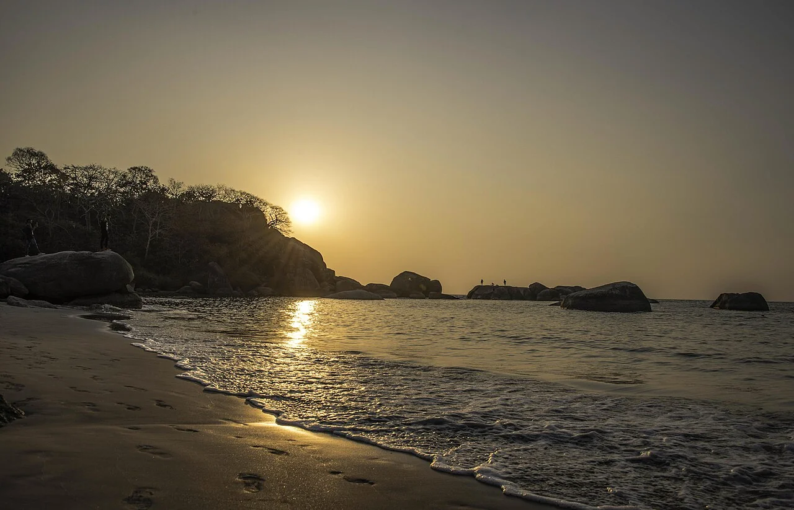

Plage d’Agonda
Goa, Inde · baignade

Plage publique d’environ 3 km dans le sud de Goa, au cœur du village d’Agonda. Le Routard la dit plus calme que sa voisine Palolem. Une colline au sud domine la plage et, au nord, Cola Beach garde un lagon. Des sorties en bateau permettent de voir des dauphins au large.
- Lieu
- Goa, Inde
- Niveau
- Variable selon les conditions
- Activités
- baignade
- Type d'eau
- Mer / océan
- Coordonnées
- 15.04, 73.99 (position approximative du secteur)
Dangers à connaître
- La plage est idéale pour se baigner, mais reste prudent face aux courants marins (Routard).
- Les tortues olivâtres sont protégées : des zones sont aménagées pour protéger leurs nids (Routard).
Le conseil d'Ocean Buddy
Reste en dehors des zones aménagées pour protéger les nids de tortues olivâtres, qui pondent surtout d’octobre à avril (Routard).
Ouvrir dans Ocean Buddy Télécharger sur l'App Store
Source : Fiche Ocean Buddy · décembre 2026 · d’après le Routard et Wikipédia · à vérifier localement.